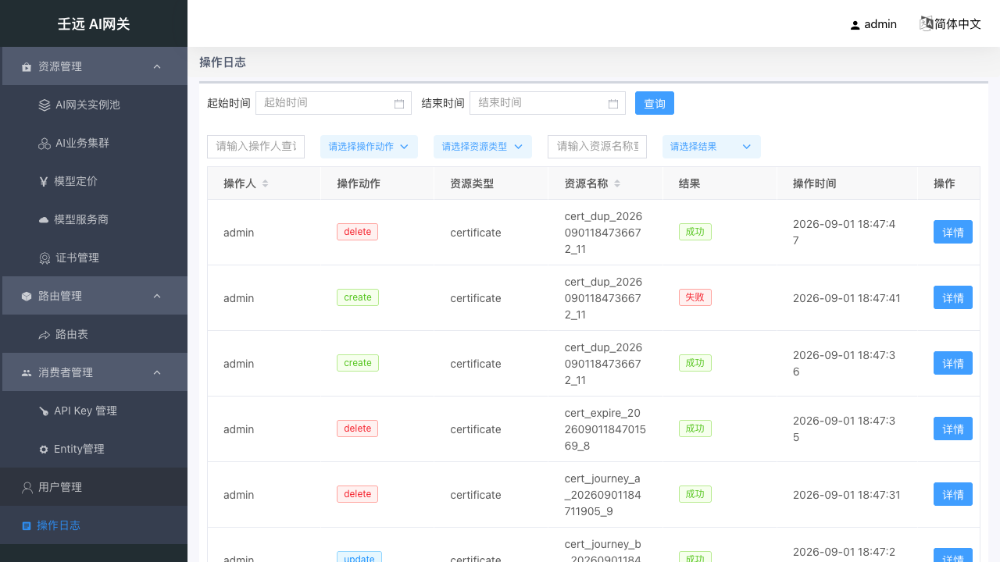
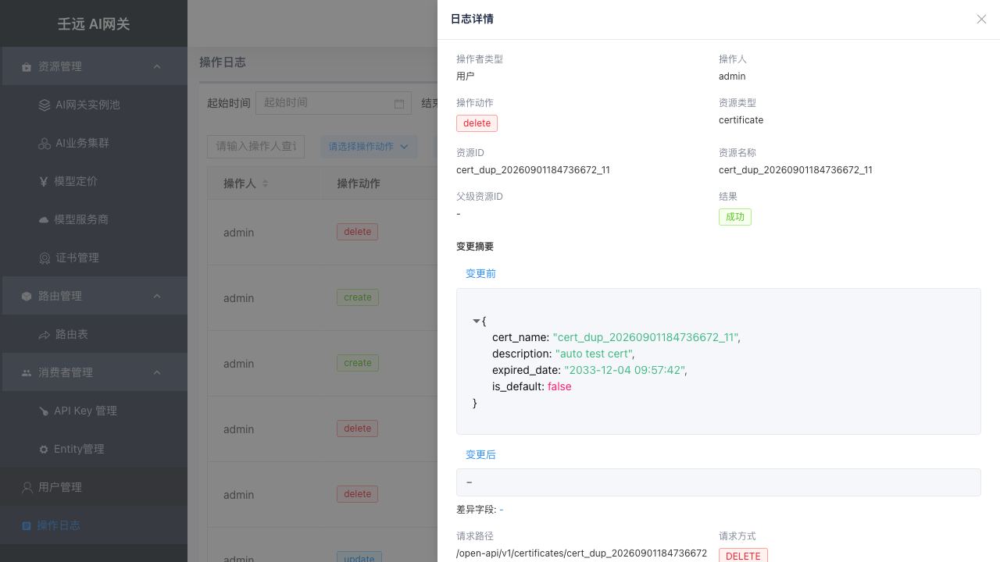

11 操作日志
操作日志提供平台写操作的只读审计查询。日志由系统在配置变更时自动写入，控制台不提供手工录入入口。
入口：侧栏「操作日志」（路径 /operation-logs）。系统管理员与系统管理员（只读）均可访问；只读视角仅查看、无写入口。
11.1 列表页
页面分为时间筛选栏与分页表格两部分：

时间范围筛选
顶部筛选栏设置起始时间、结束时间后点击「查询」，按闭区间过滤日志。未设置时间时展示全部（受分页限制）。
表格列与搜索
| 列 | 搜索方式 | 说明 |
|---|---|---|
| 操作人 | 模糊搜索 | 执行操作的控制台用户或 Token 名称 |
| 操作动作 | 下拉 | create / update / delete / reset / import / bind / unbind 等，以 Tag 展示 |
| 资源类型 | 下拉 | 如 entity、api_key、cluster、certificate 等 |
| 资源名称 | 模糊搜索 | 被操作资源的业务名称 |
| 结果 | 下拉 | 成功（绿色）/ 失败（红色） |
| 操作时间 | — | 格式 YYYY-MM-DD HH:mm:ss |
| 操作 | — | 「详情」按钮 |
本模块采用服务端分页（默认每页 20 条，可切换页码与每页条数），与部分模块的前端分页不同。
11.2 日志详情
点击行操作「详情」，右侧滑出 720px 宽的详情抽屉：

详情按以下顺序展示（不展示内部 id / log_id / operator_id）：
| 行 | 左字段 | 右字段 |
|---|---|---|
| 1 | 操作者类型（用户 / Token） | 操作人 |
| 2 | 操作动作 | 资源类型 |
| 3 | 资源ID | 资源名称 |
| 4 | 父级资源ID | 结果 |
| 5 | 错误信息 | 仅失败时展示 |
| 6 | 变更摘要 | 含变更前 / 变更后可折叠 JSON 与差异字段；敏感字段已脱敏 |
| 7 | 请求路径 | 请求方式 |
| 8 | 客户端IP | User-Agent |
| 9 | 操作时间 | — |
变更摘要区域可展开查看 before / after JSON 对比：

11.3 日志来源
以下写操作成功或失败后均会自动产生操作日志（接口本身无变化）：
- Entity / Entity 类型、API-Key、模型服务商、业务集群、路由表
- 证书、配额计划、模型定价
- 控制台用户与 Token
典型用法：在其他模块完成配置变更后，回到操作日志按资源名称或时间范围检索，核对变更内容与操作者。
11.4 权限说明
「操作日志」菜单对系统管理员与系统管理员（只读）均可见，两者都能读取全部日志。若账号无读权限，接口返回 Feature Access Deny（402），列表无法加载；此时请联系管理员确认账号角色。